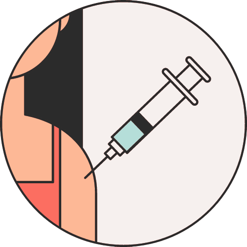

Go
Login
Logout
로그인 방법을 ì„ íƒí•´ 주세요
Connect with Facebook
Connect with Google
Connect with Twitter
Connect with Github
ì„ íƒí•œ ì˜ˆë°©ì ‘ì¢… 센터가 없어요 😱
마커를 í´ë¦í•´ 주세요!

근처에 있는 다른 ì˜ˆë°©ì ‘ì¢… 센터
asdf
asdf